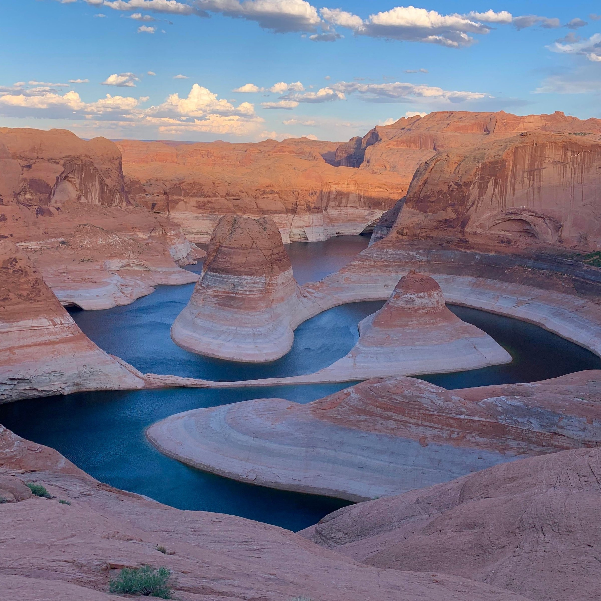

Fluvial Systems
- 1To what extent are rivers reliable tape recorders for external forcings, and at what spatial and/or temporal scales?
- 2How can both erosional and depositional landforms provide quantitative constraints on large-scale driving forces, such as tectonism (river profiles, stream power) or climate (grain size, paleohydrology)?
- 3When do other localized processes (lithology, faulting) control channel morphology?